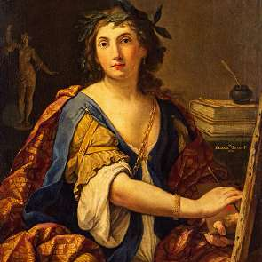
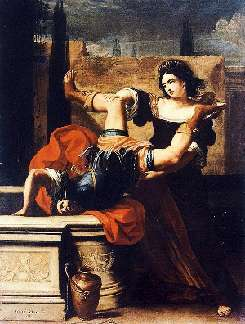

Борис Акунин
Мой календарь
В этот день в 1638 году родилась Элизабета Сирани, совершенно выдающаяся личность.
Во времена, когда пристойным уделом для женщины считались деторождение и ведение хозяйства либо жизнь в монастыре, Элизабета выбрала карьеру художницы, и не просто выбрала, а достигла на этом пути невероятного успеха - несмотря на принадлежность к «слабому полу».
Она прожила на свете всего 27 лет, но стала самой яркой звездой среди многочисленных живописцев ее родной Болоньи. В числе заказчиков художницы были монархи, кардиналы, вельможи и богатые купцы. Наследие Сирани включает больше двухсот полотен и несколько сотен гравюр. Она работала с фантастической скоростью. Зрители приходили посмотреть на своеобразный аттракцион: как художница делает портрет маслом с начала и до конца всего за один сеанс.
Кроме того Элизабета открыла первую в истории школу живописи для женщин и успела воспитать несколько талантливых учениц.
Когда она умерла молодой, при довольно загадочных обстоятельствах (кажется, была отравлена), мужчины-современники нашли этому устраивающее их объяснение: несчастная отравилась из-за того, что не смогла выйти замуж.
Как относилась Элизабета Сирани к женскому вопросу, легко понять по сюжетам ее полотен. Там есть и Юдифь, убивающая Олоферна, и Порция, пронзающая себе ногу кинжалом, чтоб доказать силу воли, и Тимоклея, которая топит в колодце своего насильника.
У Элизабеты Сирани есть чему поучиться не только женщинам, но и всем людям.
Ни на кого не оглядывайтесь, пусть думают, что хотят. Будьте хозяйкой и хозяином своей судьбы.